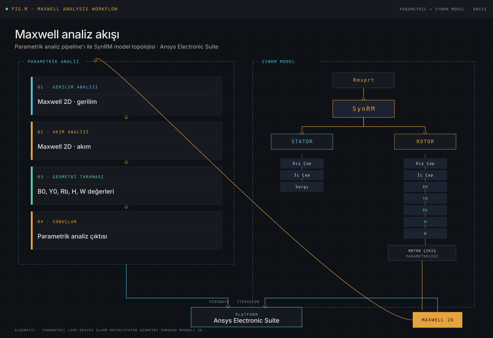
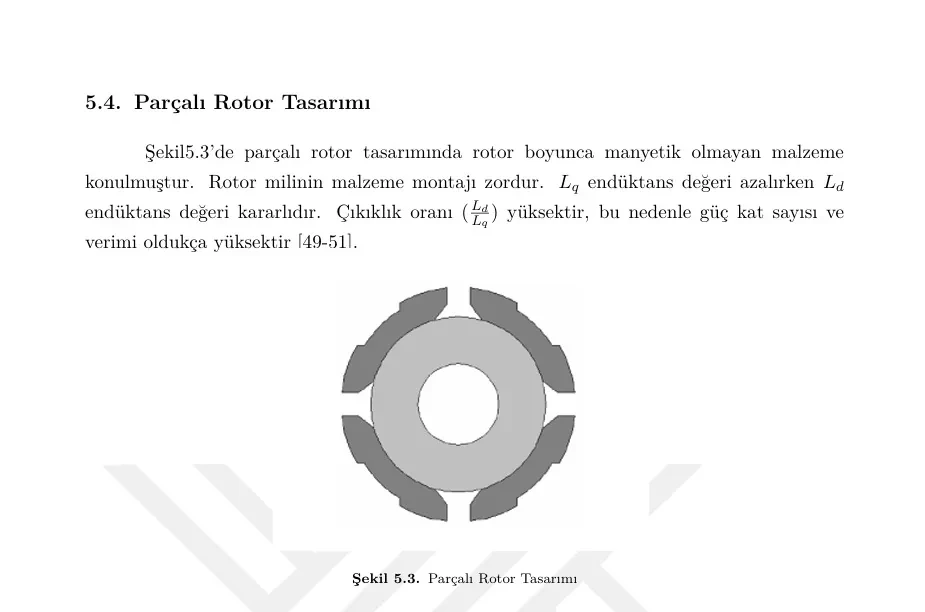
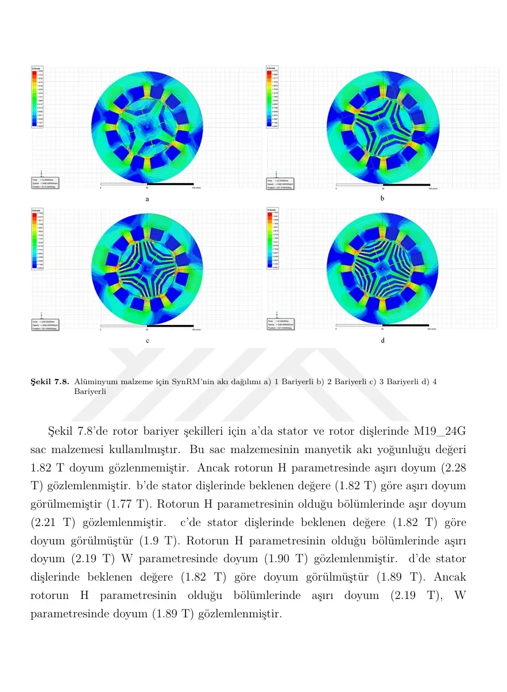
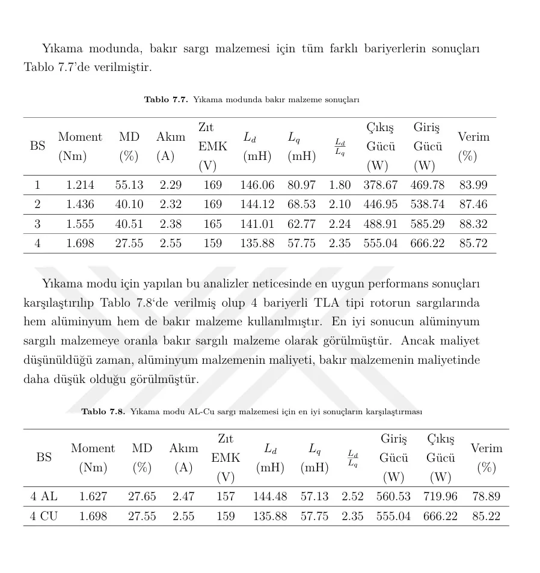

Thesis on SynRM rotor architectures
M.Sc. work comparing how SynRM rotor flux-barrier geometries affect electromagnetic performance for washing-machine applications, using Ansys Maxwell.
Problem and method
The thesis focused on evaluating SynRM as a magnet-free alternative. In particular, the impact of rotor flux-barrier geometries on magnetic flux, torque production, and efficiency balance was investigated.
Rotor flux-barrier geometries were compared under the same application target. Magnetic flux distribution, torque behavior, and performance trends were examined within a parametric analysis pipeline using Ansys Electronics Suite (Maxwell).
Maxwell analysis workflow
Starting from Rmxprt, the SynRM model setup combines stator and rotor parameter sets (B0, Y0, Rb, H, W) into a parametric analysis pipeline alongside voltage and current analyses. Results feed back through Maxwell 2D in an iteration loop, producing the final motor output parameters.

Tools and methods
Technical figures



